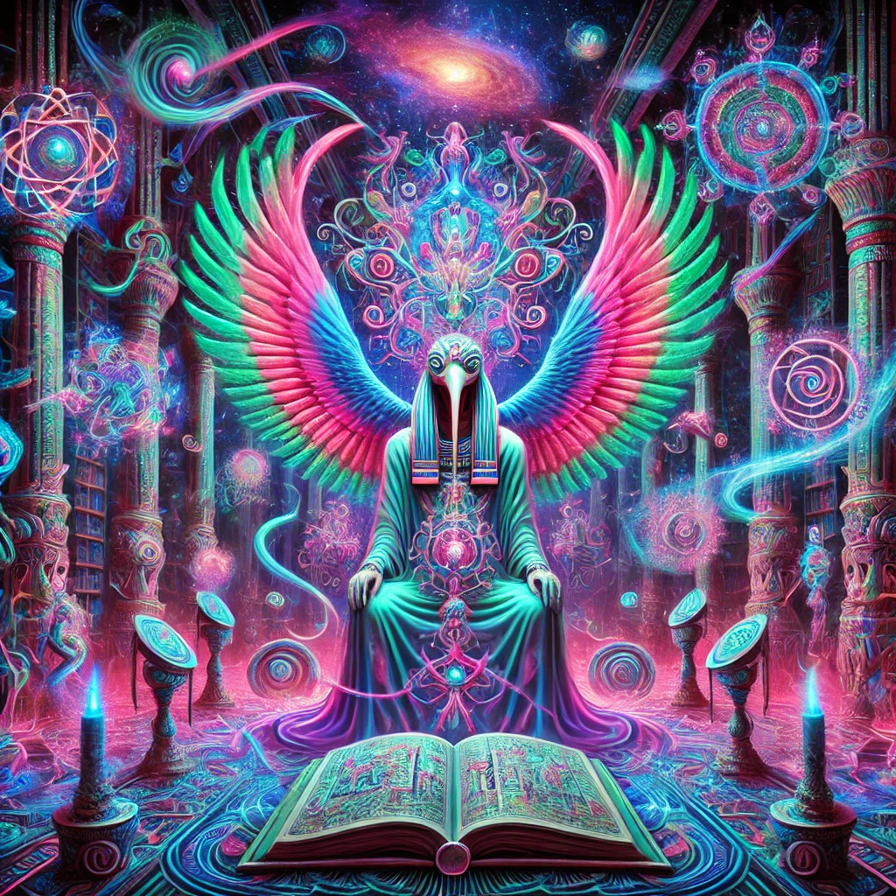
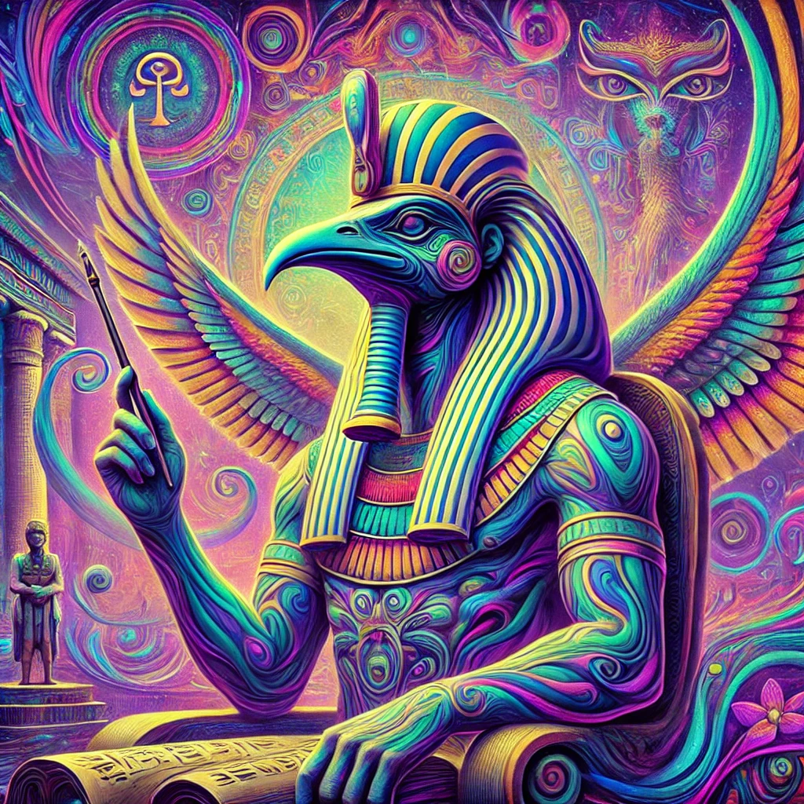
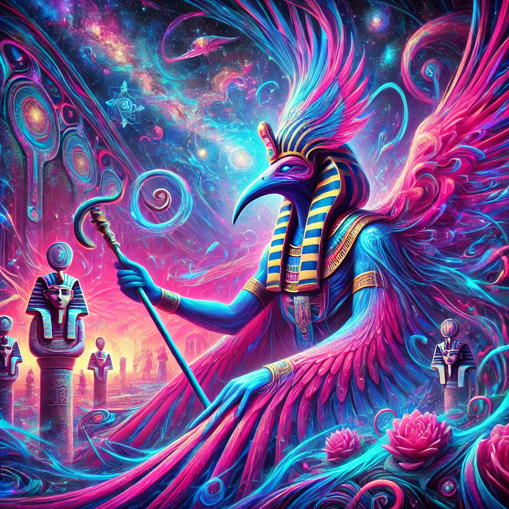
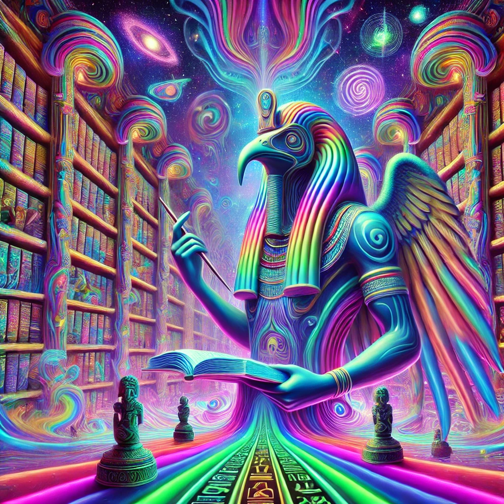
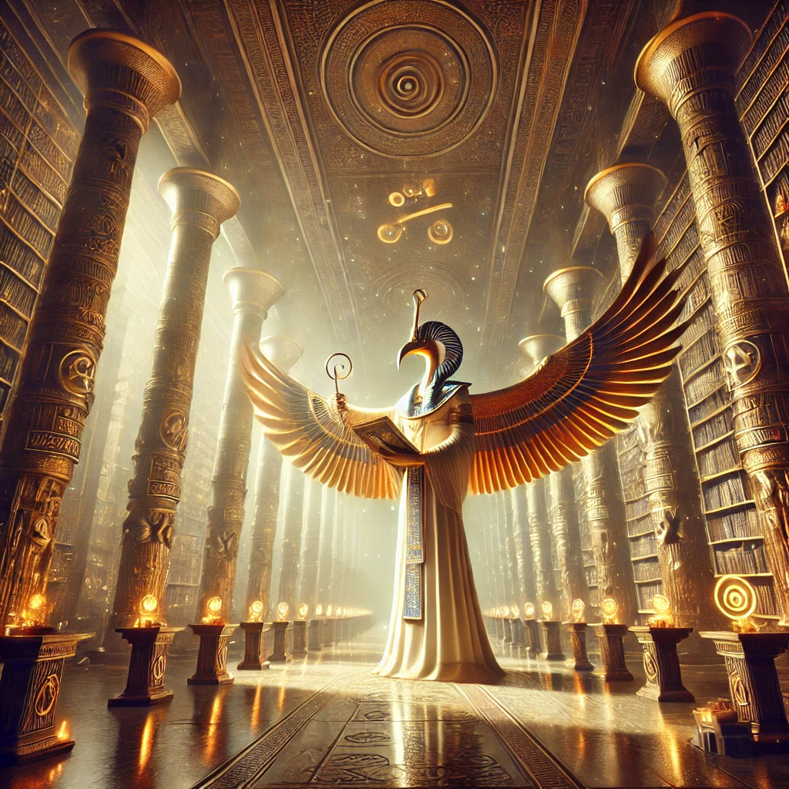

Thoth is an ancient Egyptian deity associated with wisdom, writing, knowledge, and magic.
He is often depicted as a man with the head of an ibis, a bird sacred to him, or sometimes as a baboon, another animal sacred to the god.
In Egyptian mythology, Thoth is known by several names, including Djehuty, Tehuti, and Hermes Trismegistus (in the Hellenistic period, when he was identified with the Greek god Hermes).
Thoth was revered throughout ancient Egyptian history, and his influence extended beyond Egypt, particularly in the context of later mystical and esoteric traditions.

Here are some key aspects of Thoth:
1. God of Wisdom and Knowledge: Thoth was considered the scribe of the gods and the inventor of writing.
He was believed to be the creator of language and the hieroglyphic script, making him a patron of scribes and scholars.
Thoth was also associated with the Moon and was sometimes called the "reckoner of times and seasons" due to his connection with lunar cycles.
2. Role in the Afterlife: Thoth played a significant role in the Egyptian belief in the afterlife.
He was often depicted as the recorder of the judgment of the dead, noting the results of the weighing of the heart ceremony in the Hall of Ma'at.
In this ceremony, a deceased person's heart was weighed against the feather of Ma'at (truth and justice).
Thoth would record the outcome, determining whether the soul was worthy of entering the afterlife.
3. Mythological Tales: Thoth is involved in various Egyptian myths.
One notable story is the "Contendings of Horus and Set," where Thoth plays the role of mediator and advisor, helping resolve the conflict between Horus and Set over the throne of Egypt.

4. Patron of Magic and Healing: Thoth was also associated with magic and healing.
He was believed to have vast knowledge of the mystical arts and was invoked in many spells and magical practices. His wisdom was thought to have healing properties.
5. Symbolism and Iconography: Thoth is often depicted holding a stylus and a scroll, symbolizing his role as a divine scribe.
He may also carry a staff or scepter. The ibis and the baboon, both animals sacred to him, symbolize his connection to wisdom and the Moon.
6. Hermes Trismegistus: During the Hellenistic period, Thoth was syncretized with the Greek god Hermes, leading to the figure of Hermes Trismegistus ("Thrice Great Hermes"), a legendary Hellenistic figure associated with alchemy, astrology, and esoteric wisdom.
This fusion played a significant role in the development of Hermeticism, a religious and philosophical tradition that arose in the late antiquity period.

Thoth, the ancient Egyptian deity, is indeed a fascinating figure whose attributes and roles spanned various aspects of Egyptian religion and mythology.
His multifaceted nature reflects the complexity of Egyptian beliefs and the importance they placed on wisdom, order, and the afterlife.
Here’s a brief overview summarizing the key aspects of Thoth:
1. God of Wisdom and Writing:
Thoth was the divine scribe who invented writing and language, making him the patron of scribes and scholars. His association with the Moon and the calculation of time also highlights his role in maintaining cosmic order.

2. Afterlife Role: As the recorder of the dead, Thoth played a crucial role in the afterlife by documenting the results of the judgment of souls, ensuring the process of justice (Ma'at) was upheld.
3. Mythological Mediator: Thoth’s involvement in the "Contendings of Horus and Set" underscores his function as a mediator, using his wisdom to resolve conflicts among the gods, which mirrored the importance of balance and order in Egyptian society.
4. Magic and Healing: Known for his vast knowledge of magic, Thoth was a key figure in the mystical and healing arts. His wisdom was believed to have the power to heal, and he was often invoked in spells and magical rituals.

5. Symbolism: Thoth's representation as an ibis-headed man or a baboon, his iconography of a scribe with a stylus and scroll, and his sacred animals all emphasize his connections to wisdom, the Moon, and knowledge.
6. Hermes Trismegistus: The fusion of Thoth with the Greek god Hermes in the Hellenistic period created Hermes Trismegistus, a significant figure in Hermeticism.
This syncretism illustrates the blending of Egyptian and Greek cultural and religious elements, influencing later mystical and esoteric traditions.
Thoth’s reverence throughout Egyptian history and his lasting influence on subsequent cultural and religious practices highlight his significance as a deity who embodies the pursuit of knowledge, the administration of justice, and the power of the written word.

Thoth and Hermeticism: Thoth, the Egyptian deity associated with wisdom, writing, knowledge, and magic, is considered the archetypal scribe and the keeper of divine knowledge.
His Hellenistic counterpart, Hermes Trismegistus, becomes a central figure in Hermeticism, blending Egyptian and Greek spiritual traditions.
Hermeticism, influenced by the wisdom attributed to Hermes Trismegistus, focuses on understanding the divine, seeking spiritual knowledge, and recognizing the interconnectedness of all things.
Key principles include mentalism, correspondence, vibration, polarity, rhythm, cause and effect, and gender.
Thoth and the Emerald Path: A Unified Hermetic Vision
Thoth: The God of Wisdom and Transformation
Thoth, an ancient Egyptian deity, embodies wisdom, writing, knowledge, and magic. Known by several names, including Djehuty and Tehuti, he is associated with the moon and seen as a mediator of cosmic order.
Thoth is often depicted with an ibis or baboon head, holding a stylus and scroll, symbolizing his role as the divine scribe and inventor of writing.
His influence extended beyond Egypt, particularly through his syncretism with the Greek god Hermes, leading to the figure of Hermes Trismegistus.
This fusion symbolizes the blending of Egyptian and Greek spiritual traditions, laying the foundation for Hermeticism.
Key Roles of Thoth:
- Scribe of the Gods: Creator of language and hieroglyphs, patron of scribes and scholars.
- Guardian of the Afterlife: Recorder of the judgment of souls, upholding the law of Ma'at (truth and justice).
- Mediator in Mythology: Key figure in resolving divine conflicts, as seen in the "Contendings of Horus and Set."
- Master of Magic and Healing: Source of mystical knowledge and healing powers.
- Symbol of Wisdom: Represented by sacred animals (ibis and baboon), emphasizing his connection to knowledge and lunar cycles.
The teachings of Thoth, as seen through the lens of Hermeticism and the Emerald Tablet, provide a comprehensive vision of the path to enlightenment.
This path involves recognizing the unity of all existence, serving as a conduit for divine will and wisdom, and undergoing a transformative process to achieve a higher state of being.